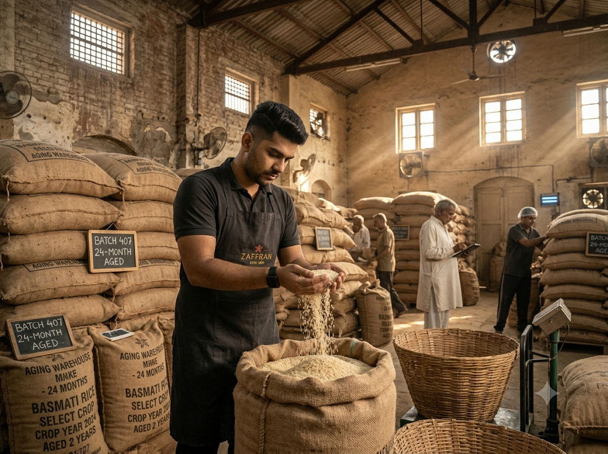

1. The Chemistry of Moisture Reduction
When basmati is harvested in autumn, its kernel moisture hovers around 14% to 16%. In this state, the interior starch granules are soft and water-soluble. If dropped into boiling water, the starch gelatinizes rapidly and ruptures through the outer husk, releasing sticky amylopectin.
Over 24 months in aerated burlap bags, the moisture slowly and uniformly drops to 9%. The outer husk hardens, and the proteins within the endosperm knit tightly together. When boiled, aged grains do not swell horizontally; they stretch dramatically lengthways.

Selecting the Golden Grain: The 2-Year Basmati Aging Secret2. Amylose Crystallization: The Non-Sticky Secret
Grain aging transforms volatile starch into crystallized amylose. This higher amylose concentration means aged basmati can absorb nearly 2.5 times its weight in rich meat broth without losing structural integrity.
Each solitary grain acts like a micro-sponge, soaking in the rendered bone marrow, melted ghee, and saffron milk while remaining dry to the touch and completely separate on the plate.
Chef Tariq's Grain Test
"Take five raw grains and press them hard between your thumb and forefinger. Fresh rice fractures into powder; properly cured two-year basmati rings like porcelain and refuses to snap."